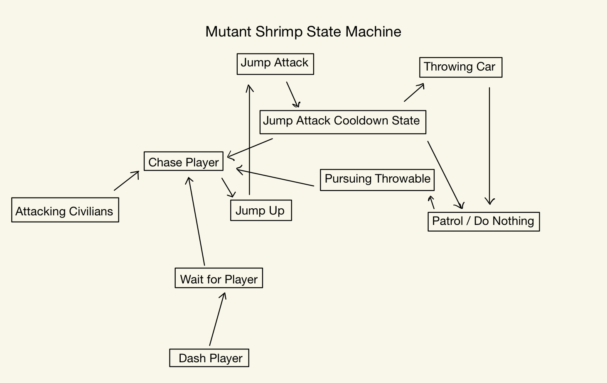

As a Prototype Engineer, I develop the custom weaving controller through
hardware prototyping, PCB design, fabrication, and manufacturing. I integrate
the physical hardware with gameplay to turn weaving interactions into
responsive player input.
Prototype and iterate on the custom physical weaving controller.
Explore sensors and hardware mechanisms for detecting player
interaction with the spool and weaving components.
Translate physical interactions such as pulling, rewinding, and
thread tension into usable game inputs.
Collaborate with gameplay engineers and designers to ensure the
physical controller supports the narrative and gameplay experience.
Fabricate, assemble, test, and refine controller prototypes for
reliability and usability.
UI
Implemented responsive, anchored UI to support multiple screen ratios in collaboration with the UI team.
Health bar with chip-away effect, updating instantly via event subscriptions.
Pulsing blood overlay triggered when player health is low.
Speedometer with animated speed lines that scale based on flight velocity.
Enemy and civilian health bars using canvas groups to billboard and fade based on camera distance and direction.
Randomized blood splatter effects triggered on enemy hits.
Interactive main menu built with Cinemachine virtual cameras and UI buttons.
Pause screen in beta.
End screen with animations for enhancement.

Enemy State Machine
I have programmed two enemies types for this project. One flying and one land enemy.
Land Enemy - Mutant Shrimp
Patrol State: The enemy roams the environment searching for civilians or throwable objects.
Chase Player State: If the player is detected within sight range, the enemy aggressively pursues them.
Pursuing Throwable State: The enemy locates and moves toward the nearest throwable object, such as a car.
Throwing Car State: If a throwable object is acquired, the enemy stops, aims, and throws it at the player.
Attacking Civilians State: If no player is nearby, the enemy attacks civilians or buildings to cause destruction.
Jump Up State: The enemy prepares and executes a vertical jump, often to perform a follow-up attack.
Jump Attack State: After jumping, the enemy slams down towards the player, dealing area damage.
Jump Attack Cooldown State: The enemy recovers briefly after landing from a jump attack.
Dash Player State: The enemy performs a high-speed charge toward the player if within dash range.
Wait For Player State: The enemy pauses and waits for the player to be vulnerable before attacking.
State Transitions: The enemy switches between states based on player proximity, throwable availability, and civilian presence.
AI Behavior: Uses raycasts and sphere checks for obstacle detection, precise targeting, and environment awareness.
Flying Enemy - Prototype
Chase State: Enemy follows the player at a set distance using NavMesh and raycasting.
Dash Attack State: Enemy performs burst dashes when the player enters attack range.
State Transitions: Switches between Chase and Dash based on player distance.
Obstacle Avoidance: Uses raycasts and sphere casts to navigate around geometry.
Rotation Handling: Enemy continuously faces the player during pursuit.